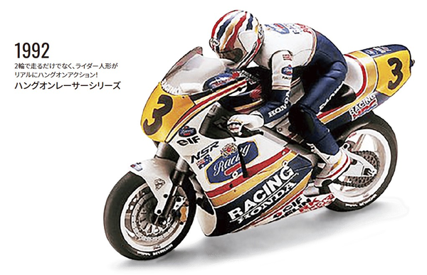

京商 ハングオンレーサーシリーズ

引用元画像：京商公式60年史
📋 基本情報
| メーカー | 京商（Kyosho） |
|---|---|
| 機種名 | ハングオンレーサーシリーズ（Hang-On Racer Series） |
| シャーシ略称 | ハングオンレーサーシリーズ |
| 型番 | 34937T1（最新版 Honda NSR500 1991） |
| 発売時期 | 初代：1992年発売 / 最新版：2025年12月入荷予定 |
| 価格 | ¥23,980（税込）- 最新版 |
| 生産状況 | 最新版：現行販売中 / 初代（1992年～）：生産終了 |
| カテゴリー | ラジコンカー（1/8スケール 電動RCバイク） |
| サブカテゴリー | EPレーシングオートバイ（ラジコンバイク） |
| シリーズ | ハングオンレーサーシリーズ |
📏 シャーシスペック
| 全長 | 270mm |
|---|---|
| 全幅 | 98mm |
| 全高 | 190mm |
| ホイールベース | 185mm |
| タイヤ径×幅 | フロントΦ78×18mm / リヤΦ86×23mm |
| ギヤレシオ | 13.80:1～19.30:1（ピニオンギヤ10T、12T、14T付属） |
| 全備重量 | 約750g |
| モーター | ル・マンDM20（標準装備） |
⚙️ 駆動系
| 駆動方式 | チェーンドライブ（実車同様のスプロケット＋ミニチェーン） |
|---|---|
| モーター | ル・マンDM20（マイルドなパワー特性で扱いやすい） |
| ギヤレシオ | 13.80:1～19.30:1（3種類のピニオンギヤで調整可能） |
| トランスミッション | 専用ギアボックス（コンパクト設計） |
🔧 サスペンション
| 形式 | S.D.S.S.（セミ・ダイレクト・ステアリング・システム） |
|---|---|
| フロントサスペンション | 倒立タイプのフロントフォークサスペンション（実車さながらの再現） |
| リアサスペンション | 左右非対称スイングアーム＋フリクションダンパー式モノショック |
| ステアリング | S.D.S.S.によるフルバンクコーナリング可能 |
💡 特徴
1992年の発売以来、京商のロングセラーモデル
- R/C電動バイクの完全自立走行を可能にしたS.D.S.S.（セミ・ダイレクト・ステアリング・システム）
- 安定感の高い走行性能に加えて、13もの関節をもつライダーフィギュアがコーナリング時にハングオン
- まるで実車のような走行フィーリングを誰でも比較的簡単に体感可能
スケール感を重視したマシン各部の作り込み
- ボディカウル、倒立タイプのフロントフォークサスペンション、ブレーキディスク＆キャリパー
- ホイール、駆動チェーン、スプロケット、左右非対称スイングアームなどのディティールを実感豊かに再現
- ディスプレイモデルとしても十分に通用する仕上り
S.D.S.S.（セミ・ダイレクト・ステアリング・システム）
- フルバンクでのコーナリングを可能とする独創的なステアリング機構
- 実車とは違うフロントフォークを左右に傾ける独特の操舵系
- 転倒せずに車体を傾けたままの走行を実現
13関節のライダーフィギュア
- ヒザを突き出し、腰を落とし、頭をコーナー出口に向けてフルバンクしながら駆け抜ける
- コーナリング時にライダーがハングオンするという、まるで実車のような走行シーン
- 遠目でみると実車そのもののリアルさ
チェーンドライブ方式
- 実車同様のスプロケット＋ミニチェーンというチェーンドライブ方式
- 540モーターよりもひとまわり小さいル・マンDM20モーターを専用のギアボックスに組み込み
- 金属チェーンでリアタイヤ駆動する実車そのもののつくり
パーツ点数が少なく、R/Cビギナーでも短時間で組み立て可能
- "作ってヨシ"、"飾ってヨシ"、"走らせてもヨシ"の三拍子揃ったハングオンレーサー
- 今までに味わったことがないR/C電動バイクの楽しさや奥深さを存分に満喫
最新版（2025年12月入荷予定）
- 1991年のロードレース世界選手権500ccクラスで戦ったホンダのワークスマシン、NSR500をモデル化
- 冷却風導入に配慮したスペース配分を実現したツインチューブスタイルのメインフレーム
- 6年ぶりの再販で、最新のアップデートが施された仕様
🔧 ぽすとそに工房での修理実績
修理難易度
最新版：★★★☆☆（普通）/ 初代（1992年～）：★★★★★（非常に難しい）
最新版は現行販売中でパーツも豊富ですが、二輪のラジコンを触れたことがない場合は少し理解が必要です。初代はパーツも少なく、絶版で手に入りにくいため修理難易度は非常に高いです。
よくある故障・注意点
- S.D.S.S.（ステアリングシステム）のメンテナンスが重要
- ライダーフィギュアの関節部分の摩耗
- チェーンドライブの定期的なグリスアップが必要
- フロントフォークサスペンションの調整
- 初代モデルはパーツ入手が困難
修理のポイント
- S.D.S.S.の調整が走行性能に大きく影響
- ライダーフィギュアの関節部分の動作チェック
- チェーンの張り具合の調整
- フロントフォークの動作確認とグリスアップ
- ル・マンDM20モーターのブラシレスモーターへの換装も可能
その他の特徴
- 25年以上経った今でもマニアに愛される理由は、そのコーナリングの気持ちよさ
- ブラシレスモーターに換装したり、4時間耐久レースを開催したりと、マニアの間で密かなブーム
- ネットオークションでは旧キットが定価の1～3倍の値で取引される人気
- 最新版は6年ぶりの再販で、最新のアップデートが施されている